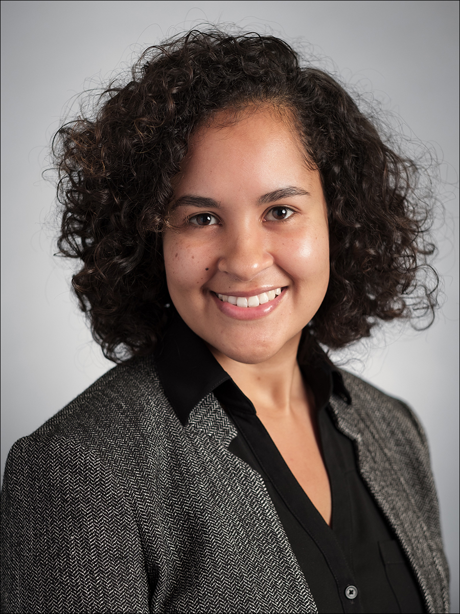

Introduction
On August 9, 2014, an 18-year-old black man by the name of Michael Brown was shot and killed by Darren Wilson, a white police officer, in the St. Louis suburb of Ferguson. That one shooting would spark months of protests and unrest in Ferguson that would plaster the headlines of news media worldwide. The Ferguson protests would bring into the national conversation intense debates over police brutality, racial inequality, justice reform and many other issues. What our research has done is to provide an insightful, local and interdisciplinary analysis of the Ferguson activist movement. We explored the relationship between media, education and geography of the St. Louis area and how that has shaped the community activism we saw in Ferguson. While much researchhas been done about the political significance of the Michael Brown case, what we have focused on is the role of organizing and media activism in the aftermath of Michael Brown’s death. Two main parts consist of this research: the media and social geography. In turn, we researched how these two parts come together to educate and inform the citizens of Ferguson into organizing themselves. Thus, this research will shed light onto local community activists and the local activism going on often left by news media in the background. Additionally, this research aims to combat the stereotype of communities of color being ill-resourced and unstable and show how these communities have the capability to organize and transform their environment. Essentially, this research goes beyond the singular national focus on policing that happened during the Ferguson protests and offers a broader picture of St. Louis’ racialized and classed dynamics through a local lens.

Meet the Research Team

Dr. Cristina Mislán is an assistant professor of journalism studies in the Missouri School of Journalism, where she teaches courses in qualitative research methods and cross-cultural journalism.
Mislán’s research draws on critical/cultural and transnational theories to study the role race, class, and gender play in shaping alternative news media. She also examines the relationship between globalization, transnationalism, and media activism to study how activists use media (both past and contemporary) for advocating social and political causes. Mislán also conducts research regarding pedagogy and technology, with a focus on the role of technology in facilitating civic engagement and critical thinking in classroom learning environments. Much of her work employs historical and textual analyses as well as other qualitative methodologies.
Mislán has published in several journals, including Journalism History and the Howard Journal of Communications. Her research has won a number of awards from the Association for Education in Journalism and Mass Communication (AEJMC) and the American Journalism Historians Association (AJHA).
Mislán holds bachelor’s degree in English and psychology as well as a master’s degree in journalism from Louisiana State University. She received her doctoral degree in media studies with a minor in Latin American Graduate Studies at Pennsylvania State University.

Dr. Amalia Dache-Gerbino is an Afro-Cubana Latina scholar who is an Assistant Professor in the Educational Leadership and Policy Analysis Department at The University of Missouri’s College of Education. Her experiences as a former Cuban refugee and student traversing U.S. educational systems, such as inner-city K-12 schools, community college, state college and a private research intensive university inform her professional experiences. She earned her Ph.D. from University of Rochester’s Margaret Warner School of Education. Her major research areas include the postcolonial geographic contexts of higher education, activism and education and college access and transition of low-income, Black and Latina/o students in the U.S. and abroad. Dr. Dache-Gerbino was awarded the Association for the Study of Higher Education’s (ASHE) 2014 Bobby Wright Dissertation of the Year. Her dissertation is titled, The Labyrinth in the Metropole: A Postcolonial Mixed-Method Study of College Access and Choice. Her most recent co-authored publication “College students or criminals? A postcolonial geographic analysis of the social field of whiteness at an urban community college branch campus and suburban main campus,” is published in Community College Review (Dache-Gerbino & White, 2016) addresses how racialization and geography conflate in college access discourses. Her co-authored book chapter entitled, “When violence interferes with educational opportunity: Latinas’ narratives of resistance and agency” in Harris and Kiyama’s (2015) book The Plight of Invisibility: A Community-based Approach to Understanding the Educational Experiences of Urban Latina/os pushes readers to re-conceptualize violence and understand symbolic violence contributing to the educational experiences of Latina students.
Currently, Dr. Dache-Gerbino is a Co-Principal Investigator on a research study titled “Teaching from the Margins: Mapping Ferguson’s Community Cultural Wealth as Public Education.” This study seeks to intersect critical geography and media discourse as public education to provide insight into community resistance after the killing of Michael Brown.